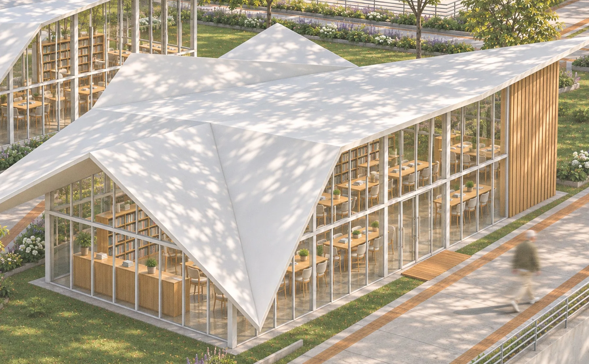
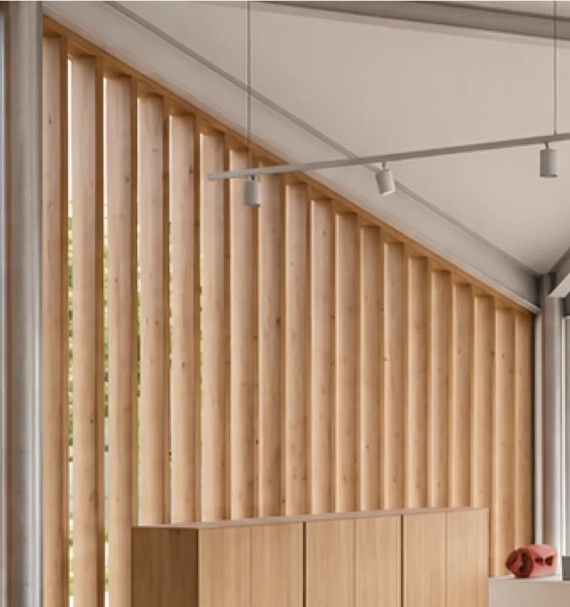
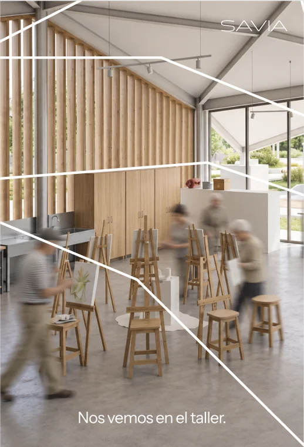

SAVIA
Ecosistema urbano de plenitud activa.
Tesis de grado · Zimmermann – Riva – Cearras
Ecosistema urbano de plenitud activa.
Tesis de grado · Zimmermann – Riva – Cearras
Así como la savia recorre la planta desde las raíces y la nutre para que siga creciendo, SAVIA entiende la vejez como una etapa en la que la vitalidad evoluciona y encuentra nuevas formas.
Es un ecosistema urbano-digital que recupera espacios en desuso y los transforma en lugares de bienestar, aprendizaje y encuentro, conectando a las personas mayores con la ciudad, con otras generaciones y con nuevas experiencias.
Talleres culturales, artísticos y de oficios, espacios de intercambio y huertas colaborativas con pabellones de cultivo, para estimular las capacidades cognitivas y fortalecer los vínculos sociales.
Cabinas inteligentes para controles básicos de salud y seguimiento personal, circuitos de ejercitación al aire libre y clases guiadas por especialistas que integran el movimiento a la vida cotidiana.
Ambos ejes se articulan con espacios verdes, recorridos peatonales y una arquitectura abierta y permeable que integra las actividades con el entorno y convierte el espacio público en un lugar de permanencia, interacción y bienestar.
Un anillo principal de hormigón con bandas de madera rodea toda la H. En el brazo norte se encadenan yoga y meditación bajo velas, el Taller Cultural sobre el cruce norte y el pabellón de cultivo con sus huertas.
Un taller artístico en el jardín norte; abajo, el jardín de estar ocupa el triángulo entre el eje, el camino transversal y la diagonal. El segundo taller queda del otro lado de la diagonal.
Baños, área de ejercitación y cabinas de salud, cada una con su conexión al camino y ninguna cubierta sobre los recorridos.
Los pabellones de cultivo y las huertas colaborativas cierran el brazo sur. En las puntas, los accesos reciben a cada visitante con orientación y un mapa del ecosistema.
Arrastrá para girar la plataforma y pasá el mouse por cada pabellón o número para ver cómo se vive cada espacio.
Cada área existe por una razón: esto es lo que aporta a quien la habita.
Las cubiertas nacen del mismo gesto que da nombre al proyecto. Como una hoja que se abre, cada techo se pliega en facetas, y sus aristas son las nervaduras por donde corre la savia. Ningún pabellón es igual a otro, pero todos hablan el mismo idioma, como las hojas de un mismo árbol.
El pliegue no es solo forma: le da rigidez a una cubierta liviana, multiplica las sombras sobre el jardín y conduce el agua de lluvia hacia los tanques recolectores. Debajo, la arquitectura se abre y se vuelve permeable, y adentro y afuera se confunden.

 La hoja
La hojaSuperficie blanca que refleja el sol y da sombra fresca; sus pliegues la vuelven liviana y firme a la vez.

El troncoListones verticales y decks que aportan calidez y textura al tacto, filtran la luz como un bosque y marcan los recorridos.
 La transparencia
La transparenciaFachadas vidriadas que dejan ver lo que pasa adentro: el taller invita, el jardín entra y nadie queda aislado.
 La raíz
La raízCanteros con cordón de hormigón y caminos con bandas de madera: la base firme que sostiene y ordena el verde.
Pósters de la campaña: talleres, agenda diaria e invitación a participar.



Creá tu cuenta en la app de SAVIA para sumarte a la comunidad. Desde ahí vas a poder:
Agenda de ejemplo, tomada del póster de la campaña.